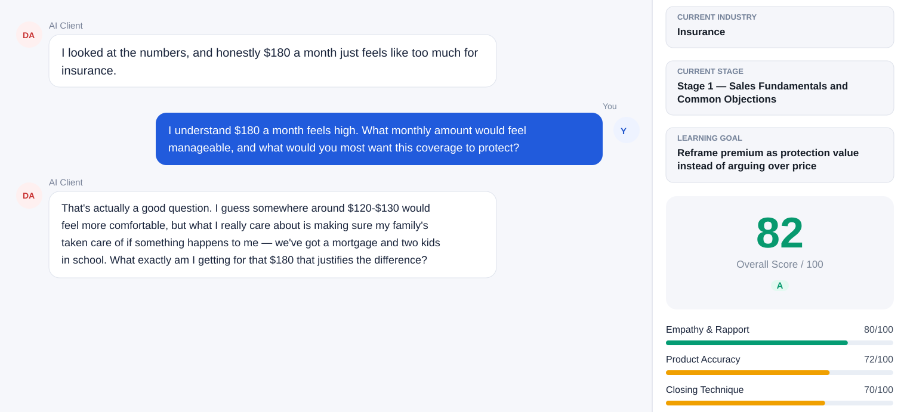

PRACTICE STUDIO · TOUR 3 / 7
Narration & captions ↓See the conversation. Coach the skill.
AI plays the client. Your trainee responds. You see the evidence—and decide what to coach next.
1 Client objection
2 Trainee response
3 Client follow-up & coaching scores
One documented fictional session · editorial UI re-renderView full-size session re-render ↗

On a phone: swipe the re-render sideways, or open full-size.
Guided explanation · captions
Captions stay readable without sound. Speech is optional and depends on your browser.
- Knowledge matters only when agents can use it with a client.
- AI becomes a practice partner, responding to the trainee like a prospective client.
- In this single fictional session, an AI client challenges a premium, the trainee asks a clarifying question, and the client follows up. The overall practice score is eighty-two.
- A separate product-rendered demonstration of this fictional premium-objection scenario shows three coaching dimensions: empathy and rapport eighty, product accuracy seventy-two, and closing technique seventy. These scores help a manager choose the next skill to coach.
- Next, connect that training to the client's specific needs.
Choose Listen to hear the explanation.